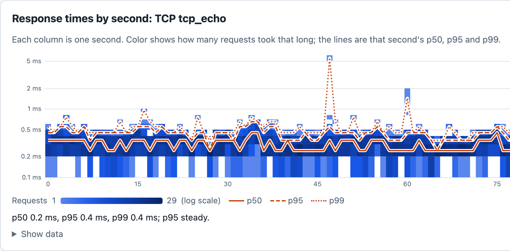
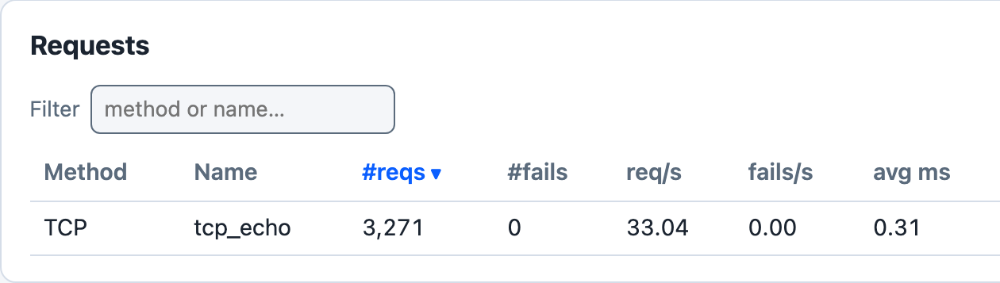

TCP Load Test
The examples/tcp_loadtest.rs example demonstrates how to use Goose to load test a raw TCP server. While Goose is primarily an HTTP load testing framework, its metrics pipeline supports any protocol through GooseUser::record_custom_request and GooseUser::record_custom_request_duration, both new in 0.19. The example uses record_custom_request_duration.


cargo run --release --features dashboard --example tcp_loadtest -- --host tcp://127.0.0.1:9000 -u 10 -r 10 -t 3m --no-reset-metrics --dashboard -q, against a small local Node echo server that writes each connection’s bytes back to it, about 100 seconds in.
The latency image shows the left part of the dashboard’s Response times by second card, the run’s first 77 seconds; the summary under its chart is the mean of the last 10 drawn seconds, which fall to the right of that part. Each user pauses 100 to 500 ms after every round trip, so 10 users make about 33 round trips a second. The example records each round trip as a Duration, so Goose keeps the fraction of a millisecond: most fall between 0.2 and 0.5 ms, and they average 0.31 ms. as_millis() truncates, so with record_custom_request every round trip under 1 ms would have been recorded as 0 ms. With -q Goose does not print the dashboard’s address when it starts: open http://127.0.0.1:5118 while the test runs. If that tab is still open when the run ends, Goose prints the address and waits for Ctrl-C.
Load testing other protocols
Some services communicate over raw TCP, UDP, WebSocket, gRPC, or other protocols rather than HTTP. Before 0.19, the only way to record metrics for these operations was to construct fake HTTP GooseRequest objects, which produced misleading results (spurious 404 errors). With record_custom_request, you time the operation yourself and hand the result to Goose.
The API
user.record_custom_request(
method, // &str: protocol label shown in metrics (e.g. "TCP", "GRPC", "WS")
name, // &str: identifies this operation in metrics output
response_time, // u64: how long the operation took, in milliseconds
success, // bool: whether the operation succeeded
status_code, // Option<u16>: protocol-specific status code, or None if not applicable
error, // Option<&str>: failure reason; ignored when success is true
).await?;This is a fragment: it runs inside a transaction function, with the six values already set.
Recorded metrics appear in all Goose reports under the method label you provide. These are the final request tables of the command under Running the example, a different run from the dashboard run above, against a different echo server, so their times differ:
=== PER REQUEST METRICS ===
------------------------------------------------------------------------------
Name | # reqs | # fails | req/s | fail/s
------------------------------------------------------------------------------
TCP tcp_echo | 1,194 | 0 (0%) | 29.85 | 0.00
------------------------------------------------------------------------------
Name | Avg (ms) | Min | Max | Median
------------------------------------------------------------------------------
TCP tcp_echo | 0.95 | 0.29 | 15 | 0.91
------------------------------------------------------------------------------
Slowest page load within specified percentile of requests (in ms):
------------------------------------------------------------------------------
Name | 50% | 75% | 98% | 99% | 99.9% | 99.99%
------------------------------------------------------------------------------
TCP tcp_echo | 0.91 | 1.05 | 1.64 | 1.8 | 4.9 | 15
------------------------------------------------------------------------------
Name | Status codes
------------------------------------------------------------------------------
TCP tcp_echo | 1,194 [0]
-------------------------+----------------------------------------------------
Aggregated | 1,194 [0]
A custom request is counted like an HTTP request: in the # reqs, # fails, req/s and fail/s columns, in the Aggregated rows (the request tables print one only when there is more than one request name; the status code table always does), and in its response times and status codes.
Parameters
method: A short label for the protocol (e.g."TCP","GRPC","WS","MQTT"). Must not be empty or contain whitespace. Displayed in place of the HTTP method in all metrics output.name: Identifies the specific operation within that protocol. Must not be empty or only whitespace. Combined withmethodto form the metrics key ("TCP tcp_echo").response_time: The measured duration in milliseconds.as_millis()truncates to whole milliseconds, so a sub-millisecond operation is recorded as0 ms; to keep its microseconds, as Goose does for HTTP requests, callrecord_custom_request_duration(below).success: Whether the operation succeeded. Unlike HTTP requests where Goose infers success from the status code, for custom protocols you control this directly.status_code:Nonewhen the protocol has no concept of status codes (e.g. raw TCP);Some(code)to record a protocol-specific code (e.g. a gRPC status code). Internally,Noneis stored as0, so status code tables show[0]for these requests unless--no-status-codesturns those tables off.error: An optional error description for failed operations. WhensuccessisfalseanderrorisNone, Goose records<method> <name>: request failed.
record_custom_request_duration takes the same arguments, with the time as a Duration such as started.elapsed(), and keeps its microseconds.
Both return an error, and record nothing, when method or name breaks the rules above. They return Ok(()) even when success is false: recording a failure does not fail the transaction. To fail it as well, return an error from the transaction function after recording, for example Err(Box::new(TransactionError::Custom(message))). With --no-metrics nothing is recorded.
Coordinated Omission Mitigation applies to custom requests the same way it does to HTTP requests.
Goose records a custom request with the method GooseMethod::Custom and keeps the label you passed in raw.custom_method. GooseMethod::Custom is new in 0.19, so a match on GooseMethod with no wildcard arm needs an arm for it. It is not an HTTP method: get_request_builder(&GooseMethod::Custom, path) returns TransactionError::Custom with the text GooseMethod::Custom cannot be used with HTTP request builders; use record_custom_request() instead.
Running the example
Start a local TCP echo server:
ncat -l 9000 -k -e /bin/cat
Then run the load test, pointing --host at the server. Goose requires a URL with a scheme for validation, and any scheme works (e.g. tcp://, grpc://, ws://). The example reads the host and port from it for the TCP connection, and fails each transaction when the URL has no port:
cargo run --example tcp_loadtest -- \
--host tcp://localhost:9000 \
--users 10 \
--run-time 30s \
--no-reset-metrics
Adapting to other protocols
The same pattern works for any protocol: replace the TcpStream logic with UDP sockets, a WebSocket client, a gRPC stub, or any other I/O:
async fn my_custom_operation(user: &mut GooseUser) -> TransactionResult {
let started = std::time::Instant::now();
// Perform the actual operation here (TCP, UDP, gRPC, etc.)
let result: Result<_, _> = do_my_protocol_operation().await;
let response_time = started.elapsed();
match result {
Ok(_) => {
user.record_custom_request_duration(
"GRPC",
"operation_name",
response_time,
true,
None,
None,
)
.await?;
}
Err(e) => {
user.record_custom_request_duration(
"GRPC",
"operation_name",
response_time,
false,
None,
Some(&e.to_string()),
)
.await?;
}
}
Ok(())
}This is a fragment: do_my_protocol_operation() stands for your own code.
Complete Source Code
//! Example showing how to load test a raw TCP server with Goose.
//!
//! Goose is primarily an HTTP load testing framework, but its metrics system can
//! track any protocol. This example demonstrates using
//! [`GooseUser::record_custom_request_duration`] to record timing and
//! success/failure information for TCP operations.
//!
//! # How it works
//!
//! 1. The target host and port are read from `--host` (e.g. `tcp://localhost:9000`).
//! 2. Each simulated user opens a TCP connection, sends a payload, and reads the echo.
//! 3. Timing is measured manually with [`std::time::Instant`].
//! 4. [`GooseUser::record_custom_request_duration`] records the result, to the
//! microsecond. It appears in the Goose metrics output under the method
//! label you provide (e.g. `TCP`).
//!
//! # Running the example
//!
//! Start a local TCP echo server (e.g. `ncat -l 9000 -k -e /bin/cat`), then:
//!
//! ```text
//! cargo run --example tcp_loadtest -- --host tcp://localhost:9000 --users 10 --run-time 30s --no-reset-metrics
//! ```
//!
//! The `--host` flag controls which server is targeted. Goose requires a URL with a
//! scheme for validation — any scheme works (e.g. `tcp://`, `grpc://`, `ws://`). The
//! host and port are extracted and used directly for the TCP connection.
//!
//! ## License
//!
//! Copyright 2020-2026 Jeremy Andrews
//!
//! Licensed under the Apache License, Version 2.0 (the "License");
//! you may not use this file except in compliance with the License.
//! You may obtain a copy of the License at
//!
//! <http://www.apache.org/licenses/LICENSE-2.0>
//!
//! Unless required by applicable law or agreed to in writing, software
//! distributed under the License is distributed on an "AS IS" BASIS,
//! WITHOUT WARRANTIES OR CONDITIONS OF ANY KIND, either express or implied.
//! See the License for the specific language governing permissions and
//! limitations under the License.
use goose::prelude::*;
use std::time::{Duration, Instant};
use tokio::io::{AsyncReadExt, AsyncWriteExt};
use tokio::net::TcpStream;
#[tokio::main]
async fn main() -> Result<(), GooseError> {
GooseAttack::initialize()?
.register_scenario(
scenario!("TcpUser")
.set_wait_time(Duration::from_millis(100), Duration::from_millis(500))?
.register_transaction(transaction!(tcp_echo).set_name("tcp_echo")),
)
.execute()
.await?;
Ok(())
}
/// Connects to the TCP server specified by `--host`, sends a payload, reads the
/// echo response, and records the round-trip as a Goose `TCP` metric.
///
/// # Persistent connections
///
/// This example opens a new TCP connection for each transaction. For production
/// load tests you may want to keep connections persistent across transactions
/// using Goose session data. Because `TcpStream` is not `Clone`, wrap it in
/// `Arc<tokio::sync::Mutex<TcpStream>>`:
///
/// ```ignore
/// // In an on_start transaction:
/// user.set_session_data(Arc::new(tokio::sync::Mutex::new(stream)));
///
/// // In subsequent transactions:
/// let stream = user.get_session_data_unchecked::<Arc<tokio::sync::Mutex<TcpStream>>>();
/// let mut guard = stream.lock().await;
/// ```
///
/// See `examples/session.rs` for the full session data pattern.
async fn tcp_echo(user: &mut GooseUser) -> TransactionResult {
let host = user.base_url.host_str().unwrap_or("127.0.0.1");
let port = user.base_url.port().ok_or_else(|| {
Box::new(TransactionError::Custom(
"--host must include a port number (e.g. --host tcp://127.0.0.1:9000)".to_string(),
))
})?;
let addr = format!("{}:{}", host, port);
let payload = b"Hello, TCP!\n";
let started = Instant::now();
let result = async {
let mut stream = TcpStream::connect(&addr).await?;
stream.write_all(payload).await?;
// Read echoed response (same length as what we sent).
let mut buf = vec![0u8; payload.len()];
stream.read_exact(&mut buf).await?;
Ok::<_, std::io::Error>(buf)
}
.await;
// A Duration keeps the round trip's microseconds, as Goose keeps an HTTP
// request's.
let response_time = started.elapsed();
match result {
Ok(_response) => {
// Pass None for status_code — TCP has no HTTP-style status codes.
user.record_custom_request_duration("TCP", "tcp_echo", response_time, true, None, None)
.await?;
}
Err(e) => {
let error_msg = e.to_string();
user.record_custom_request_duration(
"TCP",
"tcp_echo",
response_time,
false,
None, // TCP has no status codes
Some(&error_msg),
)
.await?;
}
}
Ok(())
}